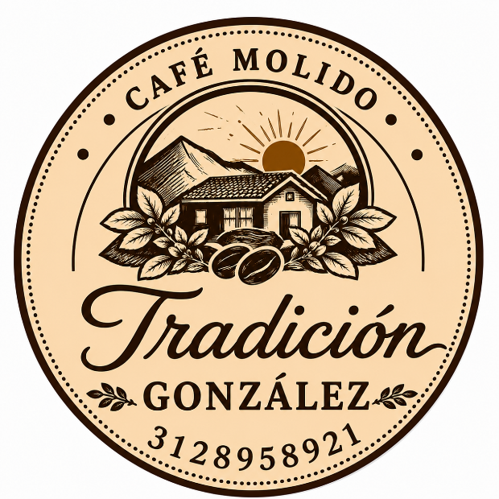
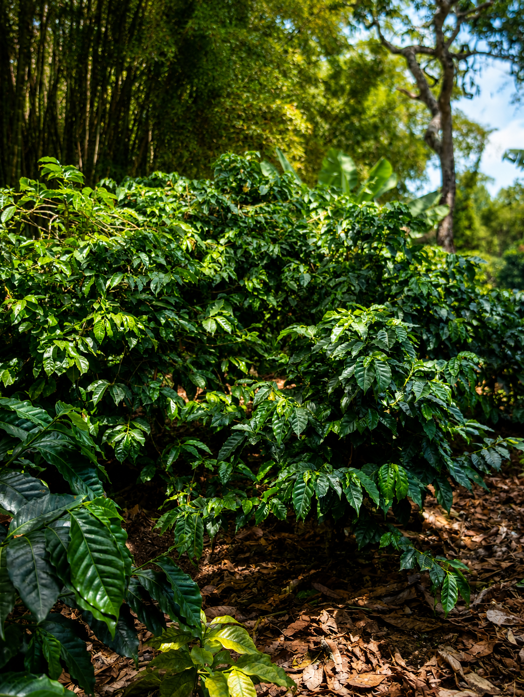
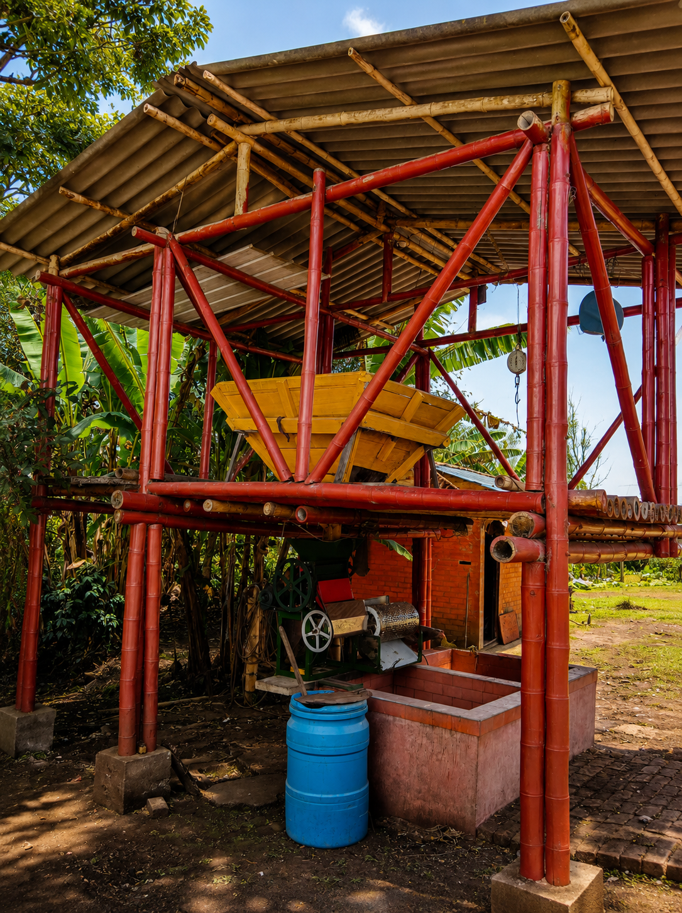
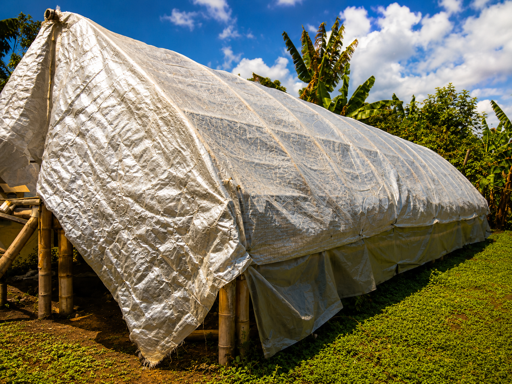
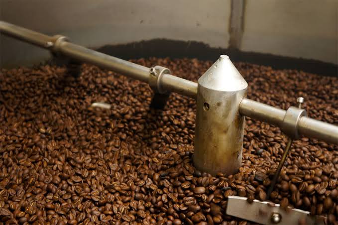
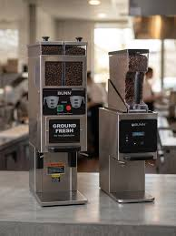

En Tradición González cuidamos cada etapa del proceso para conservar el aroma, sabor y calidad de nuestro café colombiano.

Seleccionamos cuidadosamente los frutos maduros del café para obtener granos de la mejor calidad.

Retiramos la pulpa del fruto y lavamos cuidadosamente los granos para prepararlos para el siguiente proceso.

Secamos nuestro café de manera tradicional en una parabólica, aprovechando el calor natural del sol.

Tostamos cuidadosamente los granos para desarrollar su aroma, sabor y color característicos.

Molemos los granos tostados hasta obtener el café listo para preparar y disfrutar.